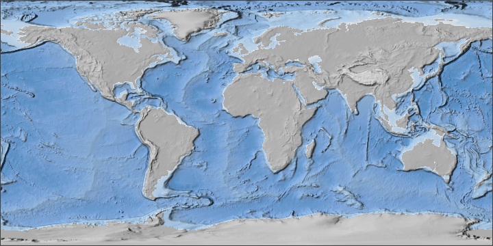
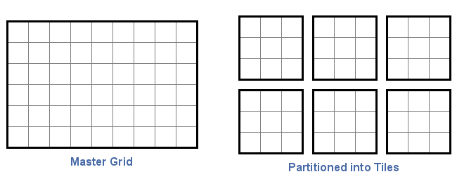
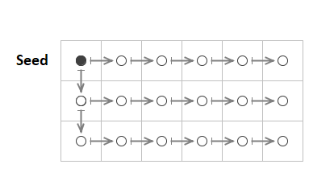
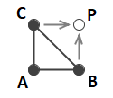
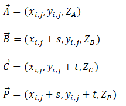
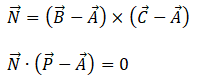

Data Compression for Numerical Raster Data
This document provides details for the design, methods, and algorithms used by the Gridfour raster data compression implementation.
One of the goals of the Gridfour software project is to explore data compression techniques for numerical, grid-based data products. We are particularly interested in lossless compression for data sets that have an underlying spatial basis. There are many such data products that benefit from custom data compression. These include Digital Elevation Models (DEMs), geophysical and remote-sensing information, the S-100 marine hydrographic formats, meteorological analysis, laboratory observations, and other grid-based representations of natural phenomena.
The Gridfour API implements lossless data compression for both integer and floating-point raster data formats. The API allows software applications to access the data in part or as a whole on an as-needed basis by performing decompression on-the-fly at runtime. The mechanisms that support authoring and reading raster data products can also serve as a convenient testbed for software developers who are investigating their own data-compression techniques. Developers can extend the capabilities of Gridfour by writing custom codec (coder-decoder) classes that are registered with the Gridfour API at runtime. This approach lets investigators take advantage of Gridfour’s data management capabilities and focus on their core algorithm development.
Data compression techniques are well established for conventional imagery and information products. So, at first glance, it may not be apparent why we would be interested in custom solutions for numerical raster formats. But, as Kidner and Smith pointed out, "most data and image compression algorithms fail to capitalize fully on the inherent redundancy in spatial data" (2003).
For example, consider the case of the ETOPO1 Global Relief Model. ETOPO1 combines land elevation and ocean bathymetry data for the entire Earth. Uncompressed, the data set requires about 445 megabytes of storage. The standard ZIP utility compresses that down to 246 megabytes. While that result represents a respectable reduction, it is still not as good as the compression ratios we expect when using ZIP to processing ordinary text.
By focusing on the unique characteristics of spatial data, implementations such as NetCDF, TIFF, and Gridfour can achieve better compression ratios for numerical rasters. In the case of ETOPO1, the Gridfour process losslessly reduces the 455 megabyte source down to just over 100 megabytes.
One of the seminal ideas of raster data compression is that there is often only a small variation in value from grid cell to grid cell. In many cases, it is possible for an algorithm to predict the value of a one grid cell based on those of its neighbors. A predicted value may not be always be a perfect match for the source data, but in general the difference between the true value and the prediction (i.e. the residual) should be small. Even better, the information content (the entropy) of the resuduals is often much smaller than that of the source data.
The venerable TIFF image format implemented a Differencing Predictor. The predictor exploits the fact that "many continuous-tone images rarely vary much in pixel value from one pixel to the next" (Adobe 1992, p. 64). It predicts that the value for each pixel will remain the same as its predecessor. The residuals are collected and passed to a conventional data compressor (LZW) which usually yields a substantial reduction in size. Kidner and Smith (1992) improved on this concept by using a triangle-based predictor which considered the values of three neighbors when estimating the value for a particular grid cell.
The Gridfour API implements both the differencing and triangle predictors. Details are given below. It also includes a more advanced algorithm based on Lagrange Multipliers that was proposed by Smith and Lewis in 1994.
In the discussion that follows, we will use a data set called ETOPO1 to illustrate key points related to raster data compression. As mentioned above, ETOPO1 is a global-scale elevation and ocean depth (bathymetry) data set provided on a grid defined by latitude and longitude coordinates (Amante, 2009). Figure 1 below shows a shaded-relief image that was created data taken from ETOPO1.

ETOPO1 is organized into a grid consisting of cells with a uniform angular (geographic) spacing of one minute of arc (1/60th degree). This spacing corresponds to an Earth-surface distance of approximately 1.855 kilometers (1.15 miles) near the equator. While that value might seem like a rather coarse sample interval, it still leads to a substantially large raster. The ETOPO1 grid consists of 10800 rows and 21600 columns, representing a total of over 233 million data points. Elevations are given in meters above mean sea level. They range from -10803 meters (depth) near the Mariana Trench to 8333 meters near Mount Everest.
ETOPO1 was selected as an example for a number of reasons. First, it contains a substantial number of sample points and requires enough storage space to be interesting to compress. Second, the surface it describes is highly variable and provides a broad spectrum of test cases ranging from flat plains, to mountainous regions, to sheer drop offs along the Continental Shelf. And, finally, terrain data is something that is familiar to our readers and easily visualized.
It should, however, be noted that GVRS is intended to be a general-purpose utility for processing many different kinds of grid-based data sets. It is not limited to geospatial or geophysical information, and it is certainly not limited to Digital Elevation Models (DEMs). The choice of ETOPO1 was a matter of convenience as much as anything else.
The grid specification for many raster data files is large enough that it is often impractical to store the entire content in memory. Even with a relatively compact representation using short integers, the ETOPO1 data set would require close to 500 megabytes of memory. So the GVRS File format partitions large rasters using a tiling scheme. In a tiling scheme, the grid is divided into a series of regularly sized subgrids as illustrated in the figure below.

From the perspective of data compression, the tiling scheme presents two influential features. First, because tiles must be accessed independently, they are compressed individually rather than as a set. In GVRS, tiles are compressed on a case-by-case basis. This is significant because in many data sets, the statistical properties of the data tends to vary across the domain of the data. Data compression techniques thrive on redundancy and self-similarity in the source data. But raster data sets with larger grids allow more room for variation within the data. In the ETOPO1 elevation/bathymetry example, we would expect to see very different terrain (and very different data compression characteristics) over the Nullarbor Plain in Australia versus the steep drop offs along the Continental Shelf. By partitioning a data set into separate tiles, we reduce the tendency for regions of data to be compressed to include a large number of dissimilar features.
On the other hand, partitioning the data into smaller subgrids can have a disadvantage because it reduces the overall size of a block of data to be compressed. Most practical compression implementations include overhead beyond the storage required for the actual data. This overhead tends to be of a more-or-less fixed size. For a small data set, that overhead may comprise a significant amount of the overall storage required for the data. But as the size of the data set increases, the relative contribution of the overhead is reduced.
Data compression techniques that work well for text are often ineffective for raster data sets. Virtually all data compression algorithms operate by identifying redundant elements in a data set and replacing them with a more compact representation. Unfortunately, many raster data sets, particularly those containing geophysical information, tend to not present redundancy in a form that conventional data compression tools can exploit. Turning to the elevation example cited above, it is easy to imagine a set of sample points collected along a constant slope. Each elevation value in the set would be unique. So a superficial inspection of the numeric values in the set would not reveal redundant elements. But every sample would reflect the same rate of increase from point to point. And the underlying structure of the data would, in fact, carry a high degree of redundancy. The key to compressing such data is to transform it into a state in which the redundant elements become visible to conventional data compression techniques.
Many raster compression techniques address the problem of non-compliant raster data by using so called predictive techniques. These techniques implement models that predict the value at each grid point in the raster. The residuals from these predictions (actual value minus predicted value), tend to be small in magnitude and more readily compressed than the source data. Thus, in its compressed form, the data is represented using the prediction parameters and the compressed residuals. During decompression, these residuals are used as correction factors that adjust the predicted values to match the original inputs.
The original 1993 implementation used a simple predictor which assumed that the value of the raster data remained constant from grid point to grid point. For that predictor, the residual was just the value of the current grid point minus that of its predecessor. The compressed form of the raster data consisted of an initial seed value followed by a sequence of delta values that could be used to recover the original representation. In GVRS, this technique is referred to as a Differencing Predictor Model. Other data compression implementations sometimes refer to it as a differencing technique. In the original Gem93 project, the Differencing Predictor approach was inspired by a description of audio delta pulse code modulation in The Data Compression Book (Nelson, 1991, p. 346). Delta pulse coding is a well-known technique that was used in the audio industry as early as the 1950’s (Chaplin, 1952). While the Differencing Model predictor is not especially powerful, it is easy to implement and offers excellent run-time performance.
The Differencing Model predictor makes a critical assumption about the data. It assumes that the values of two points closely located in space will tend to be similar. In other words, it assumes that the values of elements that are closely located spatially (i.e. in terms of grid coordinates) will also be close together numerically. And, thanks to this similarity (e.g. this tendency for neighboring samples to correlate), it is possible to use the values of one or more grid points to predict the value of a neighbor. This assumption is generally true in real-world examples such as elevation data. We expect that two points a few hundred meters apart are more likely to be similar than two points placed far apart. This idea is sometimes referred to as "spatial autocorrelation" and has been extensively studied in Geographic Information Analysis and other fields.
Again let's consider the example of a set of elevation grid points specified on a region with a constant slope. Because the sample points are collected at positions with a uniform spacing, the difference in elevation from point-to-point is constant or nearly constant. These differences are just the residuals from the Differencing Predictor Model. They would exhibit a high degree of redundancy and, thus, would compress to a highly compact form.
There are different ways we can construct a predictive model for raster data, but all of them depend on being able to relate any particular sample to its neighbors. When we consider the Differencing Predictor Model over a single row of data in a grid, identifying neighbors is straight forward. The relevant neighbor point is just the previous or next data point in the sequence. But special handling is required when processing the transition from the end of one row to the beginning of the next. If taken in sequence, these two sample points will not be spatially correlated.
In practice, this requirement for special handling is easily met. In the uncompressed form, GVRS stores grid points in row-major order (one row at a time). So in most cases, the predecessor of a grid point is just the sample that preceded it in the row. There is, however, one edge case that requires special handling. In row-major order, the grid point that follows the last point in a row is the first point in the next row. So, a predictor-residual based on the Differencing Model needs to implement special handling for that transition. In GVRS, the following rules are applied:
The figure below illustrates the pattern. The seed value is shown as a solid dot, the delta values are all shown as circles. The arrows indicate which samples are paired together to compute delta values.

It is worth noting that the use of the Differencing Model for raster data is not unique to this project. It is used in a number of specifications including the GRIB2 raster data format (NCEP 2005, table 5.6) and the TIFF image format (Adobe, 1992, p. 64, "Section 14: Differencing Predictor").
The current version of GVRS implements two additional predictor models: the Linear Predictor and the Triangle Predictor.
The Linear Predictor model predicts that the data varies as a linear function. The value for the next sample in a sequence is predicted using a straight-line computed from the two that preceded it. The predictor is applied on a row-by-row basis. The vertical coordinate of the points that precede the target point are assigned the values ZA, ZB respectively. If we assume that the grid points are spaced at equal intervals, then the predicted value, ZP, is given by ZP = 2xZB-ZA.
The Triangle Predictor was described by Kidner & Smith (1992). It uses three neighboring points A, B, and C, to predict the value of a target sample as shown in the figure below. The vertical coordinate of the points are assigned the values ZA, ZB, and ZC respectively. By treating the grid as having a fixed spacing between columns, s, and a fixed spacing between rows, t, the prediction computation is simplified to ZP = ZB+ZC-ZA.

To see how this relationship is derived, start by taking each sample and the predicted point as vectors:

From linear algebra, we can compute the normal to a plane and locate a point on that plane using the following:

When we solve for ZP, the x, y, s, and t variables cancel out and we find the simple computation used by the Triangle Predictor model.
Both the Linear and the Triangle Predictor require special handling to initialize the grid before applying the prediction computations. In the case of the Linear Predictor, GVRS uses the seed value and the pattern established for the Differencing Predictor to pre-populate the first two columns of the grid. In the case of the Triangle Predictor, the first row and first column are populated using same approach. Once the grid is initialized, the specific predictors can be used for the remaining grid cells.
Once the residuals are computed using a predictor-residual model, they are passed to compression processes based on conventional data compression algorithms such as the Huffman and Deflate techniques described above. Both the custom Huffman implementation included with the GVRS code base and the Deflate API provided as part of the standard Java library are designed to process bytes. But the predictive-residual models produce output in the form of integers. So in order to use them to process and store the outputs from the models, the residuals must somehow be serialized into a byte form. Most of the residuals tend to be close to zero, so the serialization for them is trivial. In some cases, however, the residuals will be in excess of the value that can be stored in a single byte.
While it would be feasible to simply split out the integer residual values into the component bytes, doing so would tend to dilute the redundancy in the output data. Furthermore, a significant number of the residuals are quite small (using the Triangle Predictor, 87.9 percent of the residuals computed for ETOPO1 have an absolute value less than 15). So using 4 bytes to store these small values would be wasteful.
To serialize the residuals, GVRS uses a scheme that it calls the M32 code. M32 is an integer-to-byte coding scheme that adjusts the number of bytes in the output to reflect the magnitude of each term in the input. In that regard, it uses an approach similar to that used for the widely used UTF-8 character encoding. As in the case of UTF-8, the first byte in the sequence can represent either a literal value or a format-indicator that specifies the number of bytes to follow. M32 also resembles the variable-length integer code used by SQLite4 (SQLite4, 2019), except that it supports negative values as well as positive. The first byte in the output is essentially a hybrid value. For small-magnitude values ( in the range -126 to +126), it is just a signed-byte representation of the input value. The values -127 and +127 are used to introduce multibyte sequences. And the value -128 is used to indicate the minimum 32-bit integer value, -2147483648, which Gridfour often uses as a null-data code. In the multibyte sequences, the bytes that follow the introducer give bits for the numerical value in big-endian order. Each byte carries 7 bits of information with the high-order bit used to indicate if additional bytes follow. The length of the sequence depends on the magnitude of the residual to be coded. In the worst case, 6 bytes are required to encode a large magnitude residual (1 byte for the introducer, 5 bytes for the content).
The M32 coding scheme is effective in the case where the computed residuals tend to be small because it preserves the one-byte-per-value relationship. Again, in the case of larger residuals, the M32 code can actually be longer than the 4 bytes needed for a simple integer. Fortunately, a good predictor will produce small residuals. In fact, for the elevation data sets used when developing GVRS, the average length of the M32 code sequences is about 1.013 bytes per grid value.
By applying the predictive-residual transformations and M32 serialization, the GVRS codecs transform the data to a state where it can be processed by conventional compressor methods. While the transformation-serialization process generally reduces the size of the data (as it did for the ETOPO1 example), its main benefit is that it results in a form with more redundancy than the original. And as the redundancy is increased, the data becomes more suitable for processing by conventional data compression techniques.
As noted above, the two codecs currently implemented in GVRS are based on the Huffman coding and Deflate algorithms. APIs that support Deflate are available in most popular software environments and programming languages. GVRS uses the Deflate class provided by the standard Java API. For the simpler Huffman coding, GVRS uses a custom implementation.
During the compression phase, the current implementation of GVRS attempts to compress data using both codecs and all three predictive-residual transformations. It then selects the serialized form that produces the smallest output size. In testing with ETOPO1, the Deflate algorithm was selected in about 65 percent of the tiles with Huffman being selected for the remaining 35 percent.
Huffman coding was originally developed for the compression of text-based data and the terminology associated with it reflects that origin. For these notes, we will stick to the usual conventions and refer to the sequence of data values to be compressed (the M32 serialized bytes) as the "text". Individual elements with the sequence (each M32-serialized byte) will be described as the symbols.
Huffman coding is based on an analysis of the frequency with which certain data values (symbols) appear within the data sequence (text) to be compressed. It provides an efficient way of assigning a unique sequence of bits to each symbol such that the more common symbols have shorter encoding sequences and the less common symbols have longer sequences. Since common symbols can be encoded using short sequences, the overall length of the encoded text is reduced.
One consequence of this approach is that the encoded message must somehow carry information about the frequency table for the symbols it encodes. Traditional Huffman implementations provide this information directly by including a symbol-frequency table at the start of the compressed data sequence. Adaptive Huffman methods embed the information in the compressed sequence itself. In either case, the frequency information adds overhead to the encoded data.
In many cases, the overhead for the frequency information has a fixed size regardless of the length of the encoded text. Thus, as the length of the original text increases, the proportion of the output due to overhead elements decreases. So, under the Huffman encoding, longer text tends to compress more efficiently than shorter text.
On the other hand, in some data sets, the distribution of the symbol frequencies can change over the course of the text. For example, in the ETOPO1 elevation data, the symbol table for a mountainous region behaves differently than that collected over the plains. So if a set of elevation data set contained data for both regions, a single frequency table would not provide an efficient description the two separate regions. In spatial analysis, this tendency of the statistical properties of data to change across a data set is referred to as non-stationarity.
These two considerations have a direct bearing on the size of the tiles specified when creation a GVRS file to cover a raster product with non-uniform behavior. A larger tile size reduces the amount of symbol-table overhead compared to the length of the encoded data. But a larger tile also allows for more non-stationarity and thus dilutes the effectiveness of the symbol table. Of course, a larger tile size also increases the memory use by the application. So finding an optimal tile-size choice may require some experimentation. In working with elevation data sets, we have found that a tile size in the range of 10 to 40 thousand grid cells is usually a good place to start.
In the classic Huffman algorithm, the symbol-frequency table is used to create a tree structure that serves as a mechanism for encoding or decoding the compressed data. Although many implementations store the frequency data directly, the GVRS implementation gains efficiency by storing the structure of the tree itself rather than retaining the actual frequency data.
In the storage phase of processing, the Huffman tree is created using the classic algorithm. Once established, the tree is stored according to the following recursive algorithm which starts from the root node of the tree.
1. Introduce with sequence with an unsigned byte indicating the number
of unique symbols, N, in the tree. Since there will never be zero symbols
in the tree, GVRS stores the value N-1 in this byte. Thus one byte is sufficient
to represent all possible symbol counts for a M32 representation.
2. Traverse the Huffman tree starting from the root node using RecusiveStore(rootNode)
3. RecursiveStore(node)
a. If the node is a branch
i. Output a bit with value 0.
ii. Call RecursiveStore on the left child node.
iii. Call RecursiveStore on the right child node.
iv. Return.
b. If the node is a leaf (a terminal)
i. Output a bit with a value 1.
ii. Output the symbol.
iii. Return.
In testing with the ETOPO1 data set, there were typically about 100 unique symbols in a M32-serialized tile. Storing the Huffman tree algorithm averaged about 782 bits per tile.
For simplicity, the tree-encoding algorithm was described above using a recursive approach. In the actual code, it is implemented using a stack. Although the stack-based approach leads to more complicated code, it is necessary because of the potential depth of recursion that might be encountered when storing the tree structure. In rare cases, the depth of the Huffman tree (and thus the depth of recursive calls) could reach 256, which would be too deep for some Java JVM’s. Thus a safe implementation required the use of a stack.
Kidner and Smith (2003) demonstrated improvement in compression ratios by using arithmetic coding rather than Huffman codes. Because arithmetic coding reflects the frequency distribution of symbols in the compressed data more accurately than Huffman, it can achieve better compression ratios than Huffman. Unfortunately, implementing arithmetic coding is more complicated than implementing Huffman coding. Arithmetic encoders also tend to require more processing time than Huffman.
As an experiment, we implemented a compression codes using the Reference Implementation of an adaptive arithmetic encoder (Nayuki, 2020). During the test, we replaced the Huffman codec with the arithmetic codec, but retained the Deflate codec. The relative number of tiles for which arithmetic coding was selected remained roughly the same as for the Huffman case described above. But the arithmetic encoder reduced the size of the compressed data by about 2 percent. On the other hand, arithmetic coding required more processing time than Huffman.
| Method | Bits/Symbol | Time to Read Tiles (seconds) |
|---|---|---|
| Huffman & Deflate | 4.6 | 1.9 |
| Arithmetic & Deflate | 4.5 | 7.2 |
It is worth noting that the Reference Implementation focuses on correctness of implementation and clarity of code, so lacks some optimizations that would tend to complicate or obscure the logic. So, there may be opportunities for reducing the processing time. Arithmetic coding may be the subject of future investigation for the GVRS project.
The introduction to this article made the claim that the GVRS package is intended to serve as a testbed for investigators and software developers who wish to experiment with their own solutions for raster data compression. We hope that by describing the current implementations, we demonstrated some of the reasons that we think that claim is valid.
There are many, many promising avenues to explore for better solutions to the raster data compression problem. Kidner and Smith (2003) used a more powerful predictor based on Lagrange multipliers and arithmetic coding. Some commercial solutions (and the JPEG 2000 standard) have explored the use of wavelet functions. Data compression continues to be an area of active interest in the software community, and we fully expect that new techniques are waiting to be discovered.
The GVRS project is especially interested in lossless, or nearly lossless, techniques for compressing real-valued data. The current GVRS implementation implements compression for floating point data, but the results are not as successful as they are for integers.
If you are investigating raster-based data compression, we wish you the best of luck and hope that insights from GVRS can help you on your way. And, as always, we welcome your ideas and suggestions.
Adobe Systems, Inc. (1992). TIFF Revision 6.0 Final – June 3, 1992. Retrieved from https://download.osgeo.org/libtiff/doc/TIFF6.pdf
Amante, C. and B. W. Eakins (2009). ETOPO1 1 Arc-Minute Global Relief Model: Procedures, Data Sources and Analysis. NOAA Technical Memorandum NESDIS NGDC-24, DOI: 10.7289/V5C8276M
Cutler, C. Chapin. (1950). U.S. Patent No. 2605361, "Differential Quantization of Communication Signals". Filed June 29, 1950, issued July 29, 1952
Deutsch, L. Peter (1996). "DEFLATE Compressed Data Format Specification version 1.3". IETF. p. 1. sec. Abstract. doi:10.17487/RFC1951. RFC 1951.
Huffman, D. (1952). "A Method for the Construction of Minimum-Redundancy Codes" (PDF). Proceedings of the IRE. 40 (9): 1098–1101. doi:10.1109/JRPROC.1952.273898.
Kidner, D.B. and Smith, D.H. (1992). "Compression of digital elevation models by Huffman coding". Computers and Geosciences, 18(8), 1013-1034.
Kidner, David B. & Smith, Derek, H. (2003). "Advances in data compression of digital elevation models". Computers & Geosciences 29 (8), 985-1002.
National Weather Service -- National Centers for Environmental Prediction [NCEP], 2005. "NCEP WMO GRIB2 Documentation". Accessed January 2020 from https://www.nco.ncep.noaa.gov/pmb/docs/grib2/grib2_doc/
Nayuki (2020). "Reference Arithmetic Coding". Retrieved January 2020 from https://www.nayuki.io/page/reference-arithmetic-coding
Nelson, M. (1991). The Data Compression Book. M&T Publishing Company, Redwood City, CA.
Smith, Derek H., & Lewis, Michael. (1994). Optimal predictors for compression of digital elevation models. Computers & Geosciences, Volume 20, Issues 7-8, August-October 1994, 1137-1141
SQLite4 (2019). "Variable-Length Integers". Retrieved October 2019 from https://sqlite.org/src4/doc/trunk/www/varint.wiki.
Wikipedia (2020). "Differential pulse-code modulation". Retrieved January 2020 from https://en.wikipedia.org/wiki/Differential_pulse-code_modulation